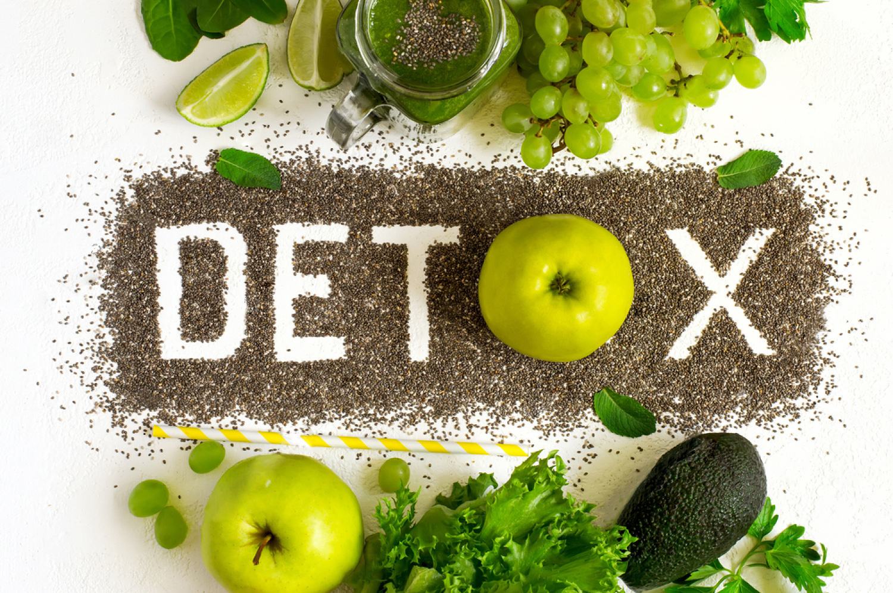

Dextox giảm cân
Nước detox là một trong những cách giảm cân hiệu quả được nhiều bạn trẻ áp dụng hiện nay. Nước là một phần quan trọng của bất kỳ chế độ ăn kiêng và tập thể dục nào, cũng như mọi chức năng cơ thể khác mà bạn có thể tưởng tượng. Các nghiên cứu về nước và giảm cân thậm chí còn cho thấy rằng chỉ cần uống nước làm tăng sự trao đổi chất của bạn!
Trong nước detox chứa rất nhiều vitamin, dưỡng chất và tất nhiên là nhiều nước nữa. Nó không chứa chất béo và calo nhưng vẫn giúp lấp đầy dạ dày của bạn, do đó bạn sẽ không cảm thấy đói nữa. Nó cũng cung cấp năng lượng cho cơ thể, tránh bị kiệt sức.
Nước detox rất dễ làm, các nguyên liệu thường có sẵn trong nhà bếp. Nó có vị rất ngon, hoàn toàn có thể thay thế nước uống hàng ngày. Vậy bạn còn ngại ngần gì mà không thử làm một bình nước giảm cân tại nhà ngay nhé.
Cách làm nước detox giảm cân
Cách làm cũng cực kỳ đơn giản, cần chuẩn bị: Bình nước (nên chọn bình thủy tinh hoặc nhựa trong), nguyên liệu là các loại rau củ quả, 2 lít nước lọc.
- Đầu tiên cần sơ chế nguyên liệu, thông thường các nguyên liệu sẽ được thái lát mỏng. Các nguyên liệu có vỏ mỏng thì có thể để nguyên vỏ. Với cam, chanh thì có thể lột bớt vỏ để giảm vị đắng.
- Cho nguyên liệu vào ½ bình, sau đó đổ đầy nước lọc vào
- Để trong tủ mát 1-2 tiếng là có thể sử dụng
Khi uống hết nước, bạn có thể thêm nước vào để sử dụng 2-3 lần trước khi nó bắt đầu hết hương vị.
Top 3 công thức nước detox dễ làm tại nhà
Dưới đây là top những công thức detox phổ biến, mang lại hiệu quả cao trong việc giảm cân, làm đẹp da và thải độc cho cơ thể mà chúng tôi đánh giá là tốt nhất. Bạn cũng có thể tìm tòi, thí nghiệm các công thức mới giúp bạn không còn buồn chán với các loại nước uống hàng ngày nữa.
Lưu ý:
- Công thức dưới đây làm cho bình 2 lít nước, bạn có thể gia giảm cho phù hợp với lượng nước và khẩu vị
- Các công thức chỉ mang tính chất tham khảo, bạn hoàn toàn có thể sáng chế một công thức cho riêng mình
1. Nước Detox táo và quế
Công thức này cực kỳ phổ biến trên toàn thế giới bởi độ ngon miệng và những lợi ích cực kỳ tốt cho sức khỏe của nó.
Trong táo chứa nhiều chất dinh dưỡng thực vật và chất chống oxy hóa có thể giúp giảm nguy cơ phát triển bệnh ung thư, bệnh tim, tiểu đường, tăng huyết áp. Và ở trong quế cũng có những chất tuyệt vời vời sức khỏe, khiến nó trở thành một loại nước giải độc cơ thể lý tưởng.

Thành phần của nước detox táo quế:
- Táo thái mỏng, bỏ phần hạt.
- 2 thanh vỏ quế khô, không sử dụng quế bột
2. Nước detox cam và việt quất
Đây cũng được đánh giá là một trong những loại nước detox ngon và có tác dụng giảm cân tốt nhất. Đây có thể là loại thức uống detox có thể thay thế nước hàng ngày. Trong loại detox này có chứa các hoạt chất làm tăng sự trao đổi chất và sự đào thải chất độc của cơ thể.
Trong cam quýt chứa nhiều vitamin C hỗ trợ quá trình trao đổi chất và giúp làm săn chắc làn da. Quả việt quất thì chứa nhiều chất chống oxy hóa và chất xơ giúp cho chúng trở thành một loại siêu thực phẩm làm cho bạn khỏe mạnh hơn, đẹp hơn và điều quan trọng nhất là nó là một loại quả giúp kiềm chế sự thèm ăn một cách hiệu quả, bổ trợ cho quá trình giảm cân của bạn.

Thành phần của nước detox cam và việt quất:
- Cam cắt nhỏ.
- Vài quả việt quất. Nếu khó tìm quả tươi thì cũng có thể sử dụng quả khô.
Có thể thêm vào vài lá bạc hà.
3. Nước detox dưa hấu và dâu tây bạc hà
Công thức nước dưa hấu và dâu tây bạc hà này là một trong những món tôi thích nhất, vì tôi yêu dưa hấu và dâu tây!
Không chỉ có vị dưa hấu thơm ngon, nó có rất nhiều lợi ích đối với sức khỏe như: hạ huyết áp, cải thiện phản ứng insulin và giảm bớt đau nhức cơ bắp.
Dâu tây chứa đầy chất chống oxy hóa tuyệt vời, làm cho thức uống này trở thành một thực phẩm dinh dưỡng.

Thành phần nước detox dưa hấu và dâu tây bạc hà:
- Dưa hấu cắt vừa, nghiền nhẹ.
- Vài quả dâu tây, một nửa cắt đôi, một nửa thái lát.
- 6 nhánh bạc hà (nghiền nhẹ).